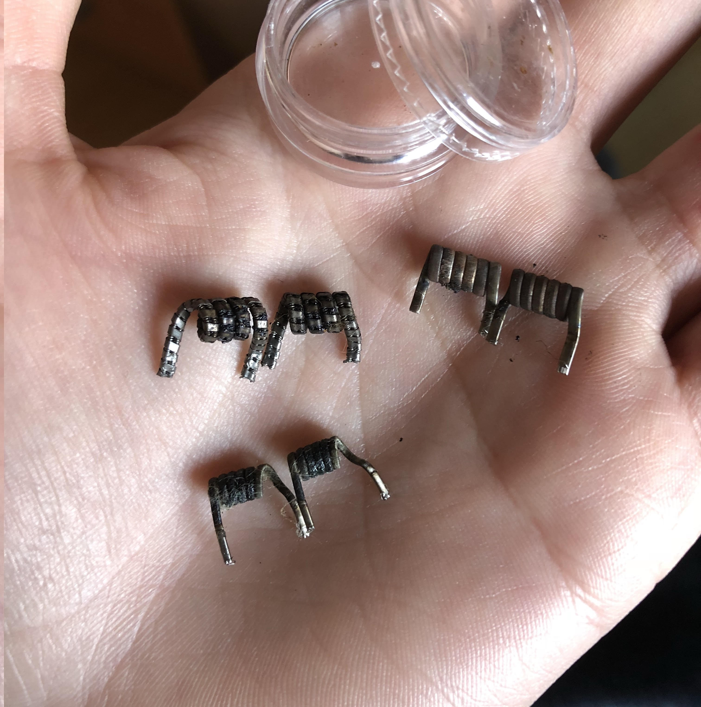

Resistencias comerciales: Las resistencias comerciales son un tipo de resistencias hechas de alguna clase de metal no corrosivo
y soportador de altas temperaturas (normalmente khantal o nichrome). Van enroscadas al soporte de coils del atomizador RTA y tienen pequeñas entradas de líquido que permiten absorver el e-liquid que hayamos introducido en el tanque del atomizador.
Este tipo de resistencias se compran en tiendas especializadas y podemos decir que tienen una vida útil de aproximadamente 2 meses con un uso normal.
Normalmente cada resistencia comercial es especial y exclusiva para cada atomizador, aun que existen empresas, como SMOK,
que crean resistencias comerciales y las distribuyen para no solo un único atomizador, sino que son perfectamente utilizables para muchos RTA de su misma marca.
Las resistencias comerciales son idóneas para los usuarios que buscan comodidad y simplemente colocar la resistencia, vapear y cuando ésta se estropea, cambiarla y seguir vapeando.
Resistencias artesanales: Este tipo de resistencias estan creadas manualmente, con un único tipo de hilo o con varios entrelazados entre si.
Las resistencias artesanales son usadas mayormente por usuarios experimentados que buscan un alto rendimiento, escogiendo también si les interesa conseguir exhalar mucho vapor o prefieren una mayor intensidad de sabor.
Como ocurre también con cualquier otra resistencia, dependiendo de la masa de hilo que la misma tenga, se consigue mayor o menor cantidad de amperios. Contra mayor sea la intensidad de la resistencia, mejor sabor se va a conseguir o por lo contrario, si la cantidad de amperaje es menor, normalmente la resistencia se calienta más rapidamente, su vaporización es más instantanea y la producción de vapor es mayor.
Existen fabricantes especializados de resistencias que se dedican a producir y distrubuir una gran cantidad de tipos de resistencias artesanales a los usuarios más exigentes.
Las resistencias artesanales tienen mayor durabilidad que las comerciales, pero hay que tener en cuenta que se tienen que limpiar de forma cuidadosa y usarlas siempre con conocimiento.
